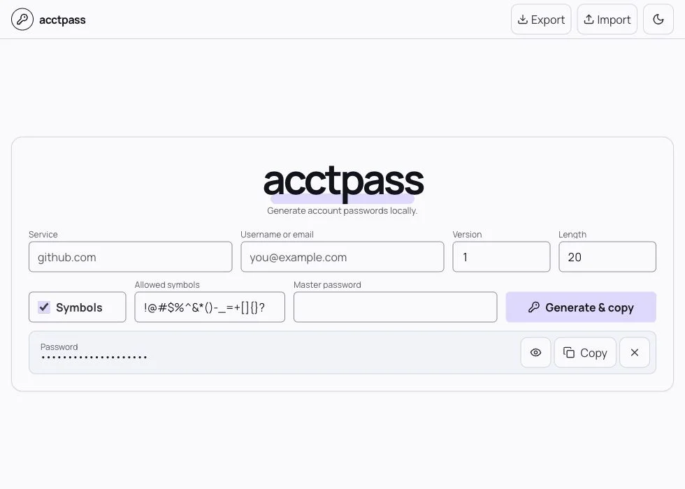

Regenerate,
don’t retrieve
The same versioned recipe regenerates the same result, every time.
OFFLINE BY DESIGN · OPEN SOURCE
acctpass regenerates a unique, strong password for every account from one encrypted local seed and a recipe only you control.

Most password tools retrieve a secret from a vault. acctpass takes a different route: it reconstructs the secret only when you need it.
The same versioned recipe regenerates the same result, every time.
No account, no sync service, and no network connection required.
Increment the counter to create a new password for one account.
A SMALL, EXPLAINABLE SYSTEM
Your master password unlocks a random local seed. The seed and account recipe then flow through a deterministic, versioned process.
Argon2id derives the key used to decrypt your local vault.
Service, account, counter, length, and symbol preference.
HMAC-SHA256 turns the seed and recipe into deterministic bytes.
The result is copied for use and never added to the vault.
LOCAL INPUTEncrypted seed
64 MiBACCOUNT RECIPEgithub.com · alice@… · 01
24 charsGENERATED IN MEMORY•••• •••• •••• ••••
CopiedTHE DESKTOP APP, AVAILABLE NOW
The native app uses a Rust/Tauri backend and compatibility vectors that check its password output against the Go CLI.
Choose your platform ↓macOSApple Silicon + Intel DMG
AvailableWindowsEXE setup + MSI installer
AvailableLinuxAppImage · DEB · RPM
AvailableImport the same encrypted seed without changing existing passwords.
Generate and copy without leaving the password visible on screen.
Clear the copied password after 45 seconds if it is still unchanged.
Export or import an encrypted vault copy when moving devices.
SECURITY, WITHOUT THE SLOGANS
acctpass names the exact primitives it uses and the limits it has. It does not call unaudited software “military-grade.”
Vault key derivation
Seed encryption
Password derivation
For critical or regulated accounts, use an audited password manager.
Security policy ↗A DIFFERENT TRADEOFF
Best for autofill, passkeys, sharing, recovery, or sync.
Best for a tiny offline tool when you accept the backup tradeoff.
DOWNLOAD THE DESKTOP BETA
Choose the package for your platform. This beta is not commercially signed or notarized, so your operating system may show an unverified-developer warning.